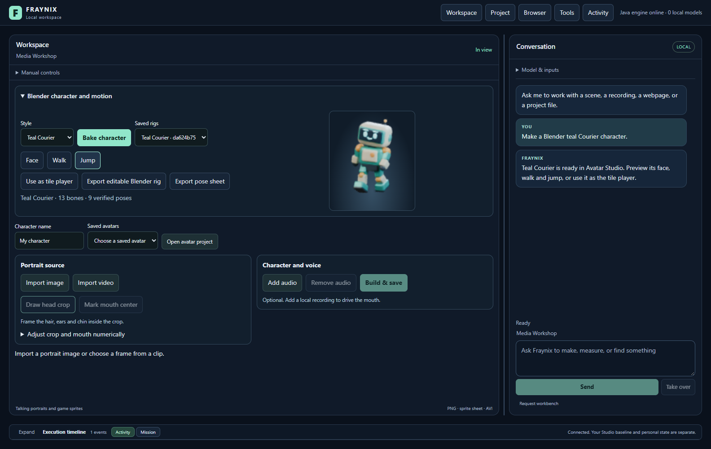
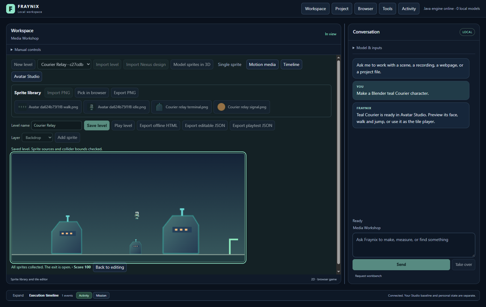
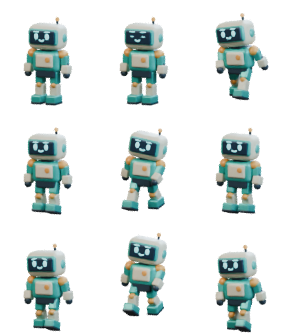

Make expressive Blender characters and play them offline
Play Courier Relay with the arrow keys and Space. The editable rig and pose atlas let you build with the same character.

Avatar Studio previewing a locally baked Courier

Courier Relay using the same character and a solid hurdle

Nine transparent poses from the editable Courier rig
System files
Open source